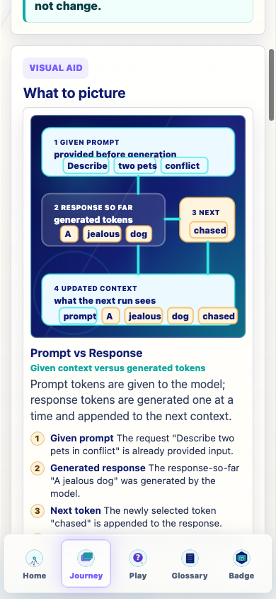
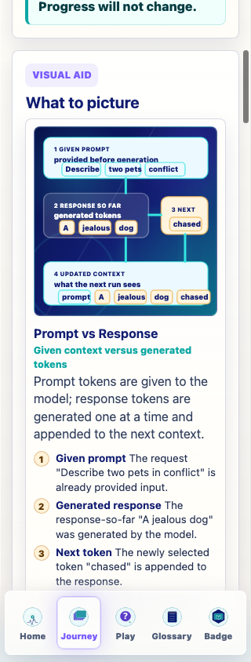

Prompt Life visual repair
v0.25.5 Prompt vs Response Visual Clarity
What Changed
- Increased the coded SVG height for the Prompt vs Response visual.
- Removed numbered overlay bubbles that crowded the content.
- Reduced long in-diagram text and split the visual into four clean lanes: Given Prompt, Response So Far, Next, and Updated Context.
- Kept longer explanations in HTML callouts below the SVG.
- Bumped the visible app version to
v0.25.5.
Verification
npm run typecheck: passed.npm run build: passed with the existing Vite large-chunk warning.- In-app browser was refreshed to
?v=0255-prompt-response-clarity; old prompt-response formula text was absent and no horizontal overflow was detected.

Prompt vs Response visual at 390px
overflow: no; old text present: no
Prompt vs Response visual at 320px
overflow: no; old text present: no